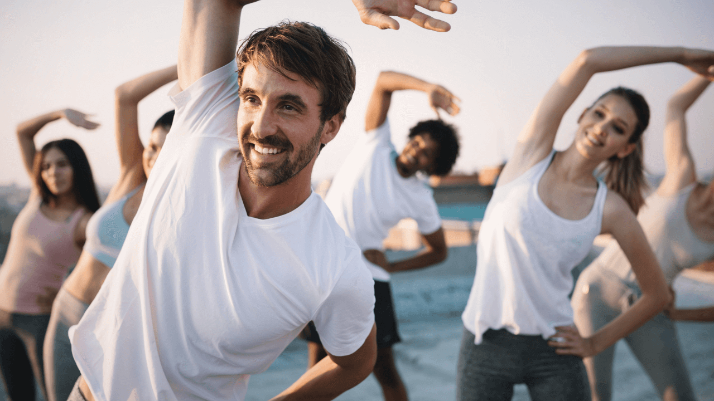
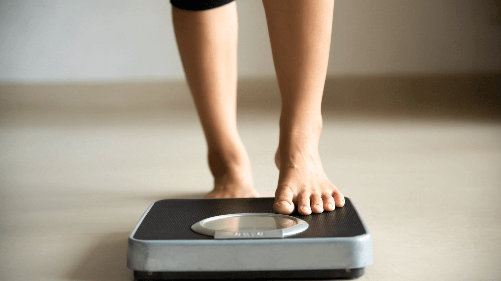
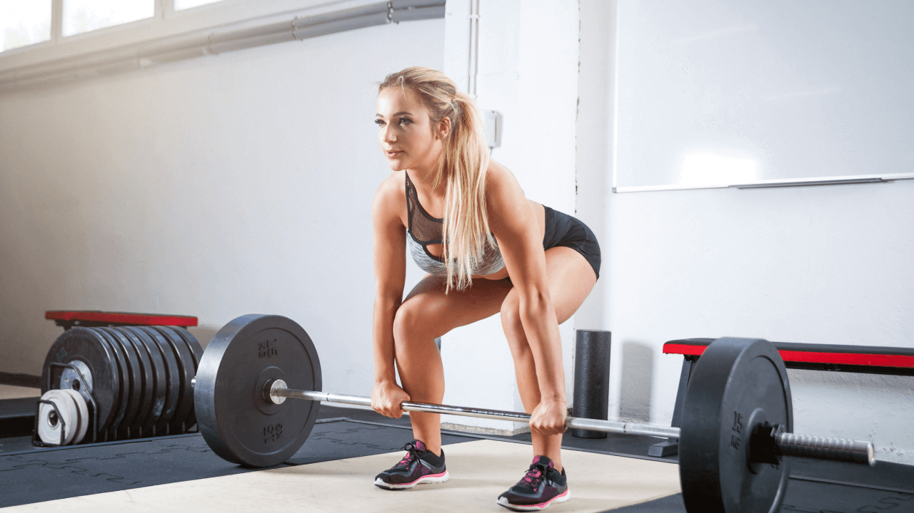
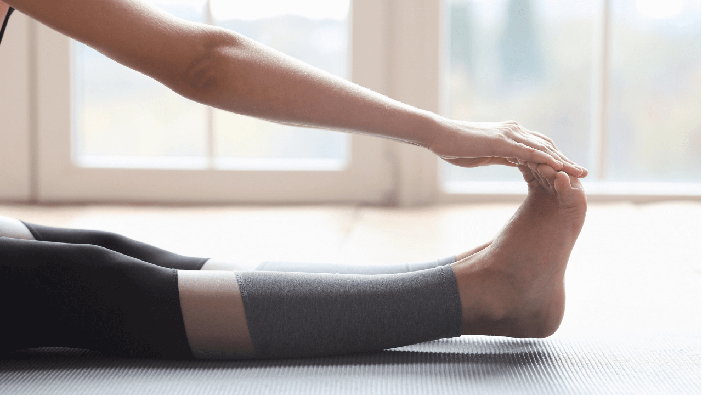
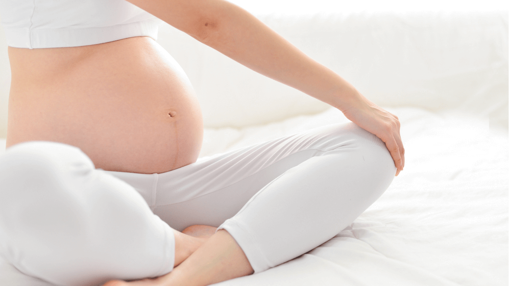
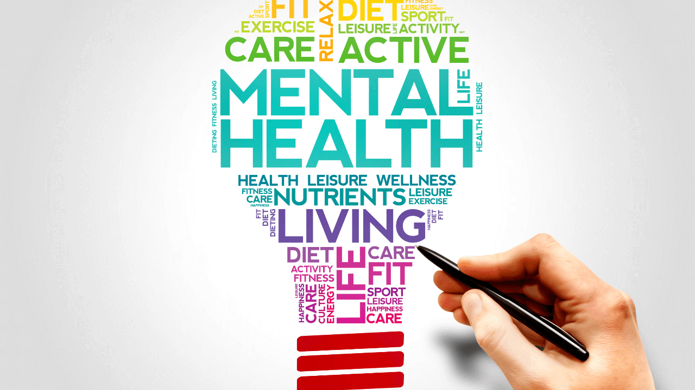

Why Train?
General Fitness
General fitness comprises of your overall health and wellbeing. Together a healthy workout and diet can improve general appearance from outside and in. Aerobic activity increases lung capacity, oxygen carriage and storage. Cardiovascular conditioning therefore lowers resting heart rate, blood pressure and reduces associated health risks. Today cardiovascular disease is a number one killer. I will work with you on an aerobic exercise programme to burn fat and increase your metabolic rate.
Weight Loss
The health risks relating to rising obesity levels include stroke, heart disease, high blood pressure and even cancer. Weight loss will always be a tough battle to fight but with the right healthy eating plan and fitness regime I will provide support and motivation to structure a programme putting you on course to making the right steps to win this fight.
Strength Training
To change your body shape, to become sculpted and toned, strength training is needed. Strength training needs to be combined with cardiovascular exercise to burn calories and lose fat.
Flexibility
Flexibility is an important aspect of fitness, which is often overlooked. It will lower the risk of injury and back problems and improve posture. Integrating a stretching regime during a session will help reduce soreness after exercise. I can instruct numerous forms of stretching techniques.
Pre/Post Natal
Many factors contribute to a healthy pregnancy including fitness, proper nutrition and avoiding alcohol and smoking. You are able to exercise up to the eighth month unless you have been advised otherwise. As your bump grows the strain is focused on your lower back so exercise to increase strength in the weakened abdominals and pelvic floor muscles will help to reduce that strain. After the birth of your baby, an exercise programme can usually commence within six weeks subject to medical advice
Mental Health
There are many studies which have shown that doing physical activity can improve mental health. For example, it can help with better sleep, by making you feel more tired at the end of the day. Happier moods, physical activity releases feel-good hormones that make you feel better in yourself and give you more energy. Managing stress, anxiety or intrusive and racing thoughts, doing something physical releases cortisol which helps us manage stress. Being physically active also gives your brain something to focus on and can be a positive coping strategy for difficult times